victor javid dadfar
personal site
currently... watching: parks and recreation, cat videos hearing: pirates of the carribean soundtrack, ariana grande playing: kingdom hearts, just dance reading: r/funny, stackoverflow writing: lots 'o programs waiting for: summer
background
I am an avid programmer, and enjoy spending my time working on my own projects - be it startups or software - where I see fit. I have extensive experience with leadership and management positions, from president of three organizations and an honor society in high school, to president of HackerLab at JHU. I am an active member of my community, often dedicating hundreds of hours of service to my local hospital. However, I do spend a lot of my time tinkering with computers.My skills are versatile - I work in a multitude of languages including Python, Java, C, HTML/JavaScript, and use a variety of software from Matlab to Xcode to Blender.
past
volunteering Saint Clare's Hospital (1.2x10^3 hours) extracurriculars programming club (president/founder), academic decathlon (captain), alto saxophone, and others sports fencing (epee) honors societies social studies (president), math, science, national, french internships QuarkNet summer intern (Rutgers)
present
future
You can @mention a GitHub username to generate a link to their profile. The resulting <a> element will link to the contributor's GitHub Profile. For example: In 2007, Chris Wanstrath (@defunkt), PJ Hyett (@pjhyett), and Tom Preston-Werner (@mojombo) founded GitHub.
projects
fluid simulation
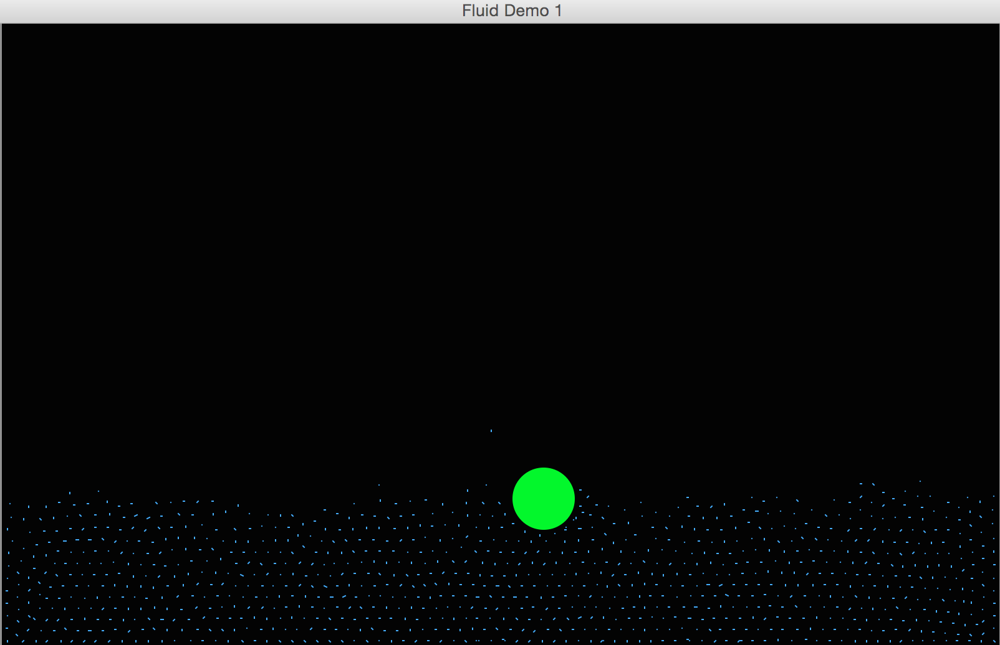
geometry wars
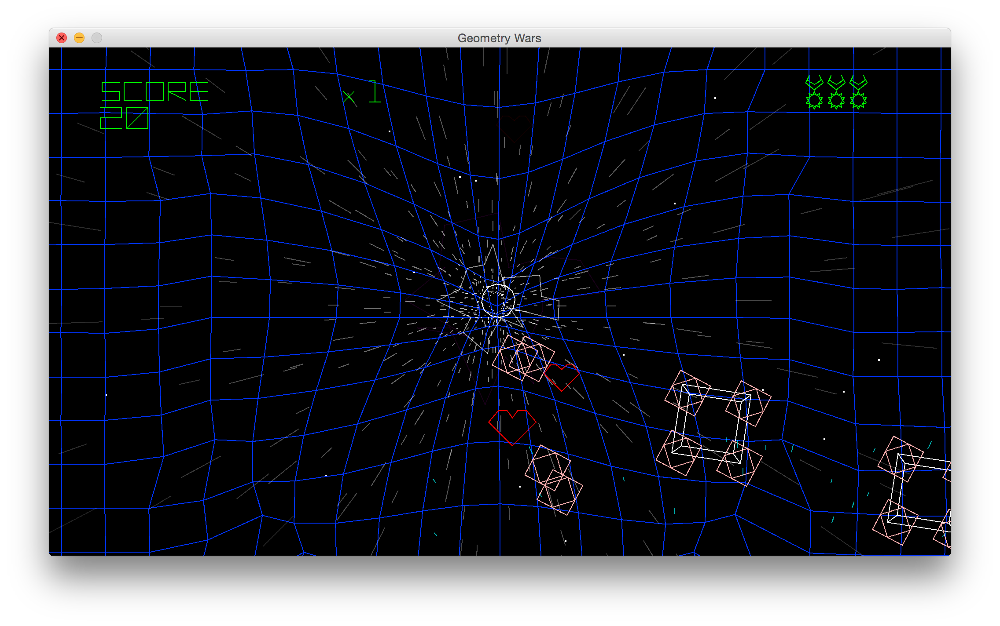
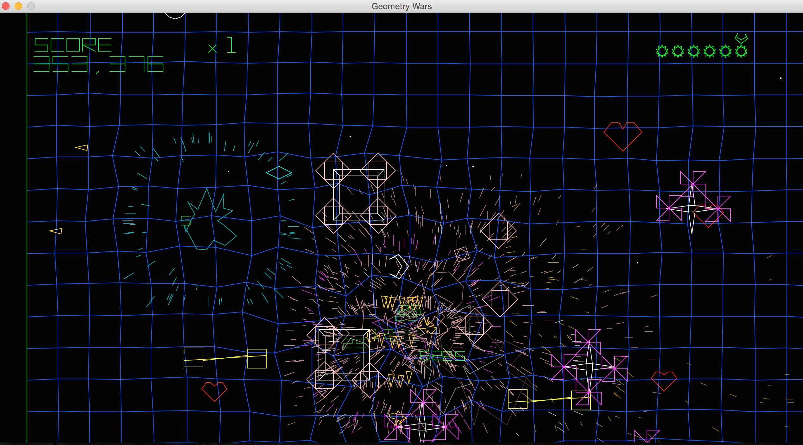
ray casting
 ray tracing
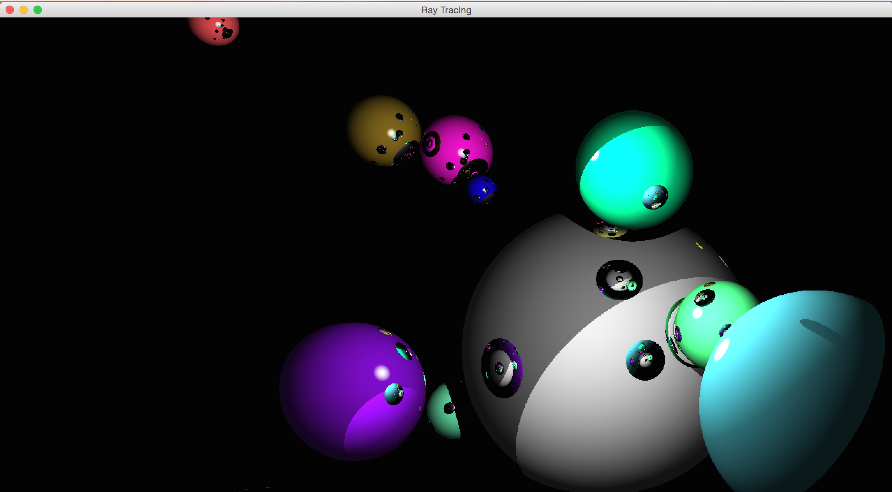
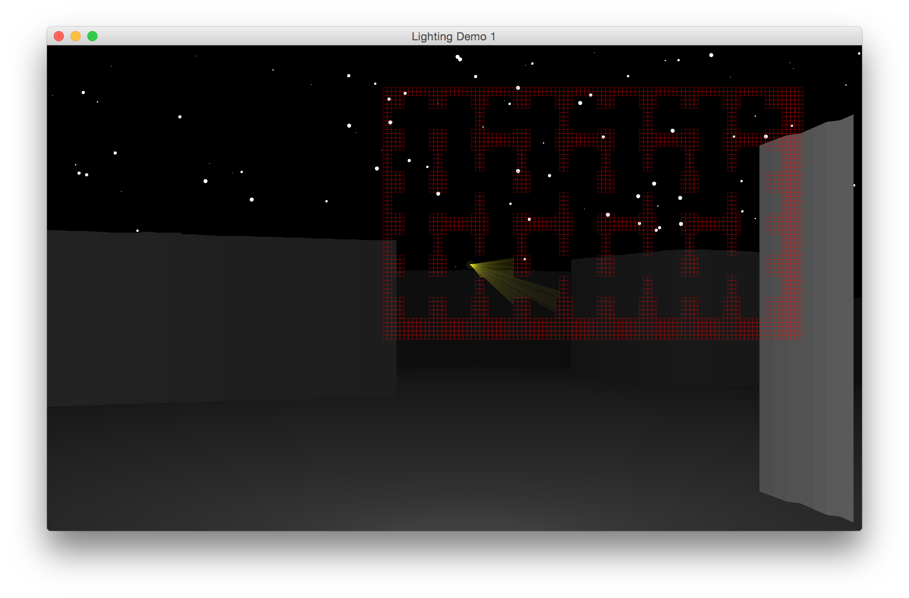
projection matricies
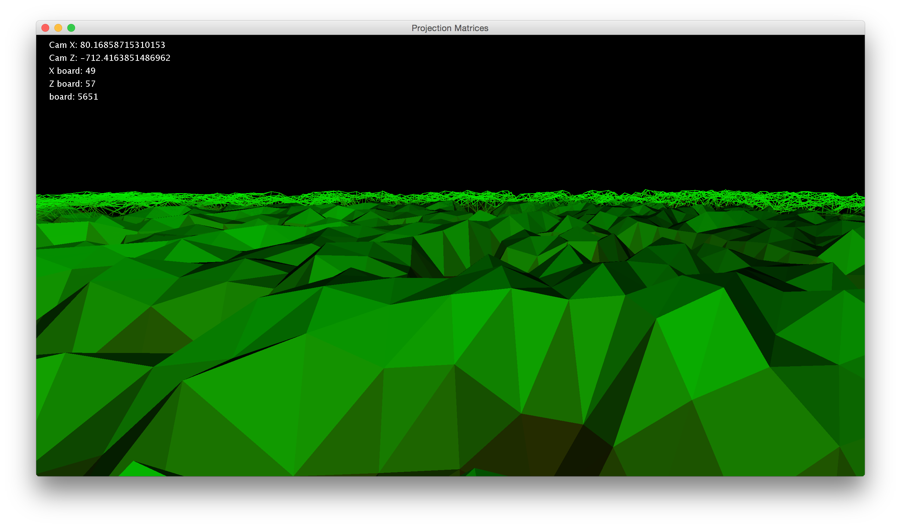
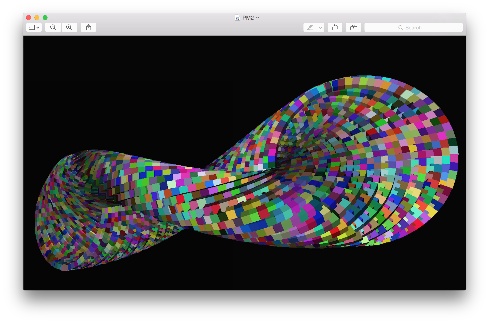
minecraft
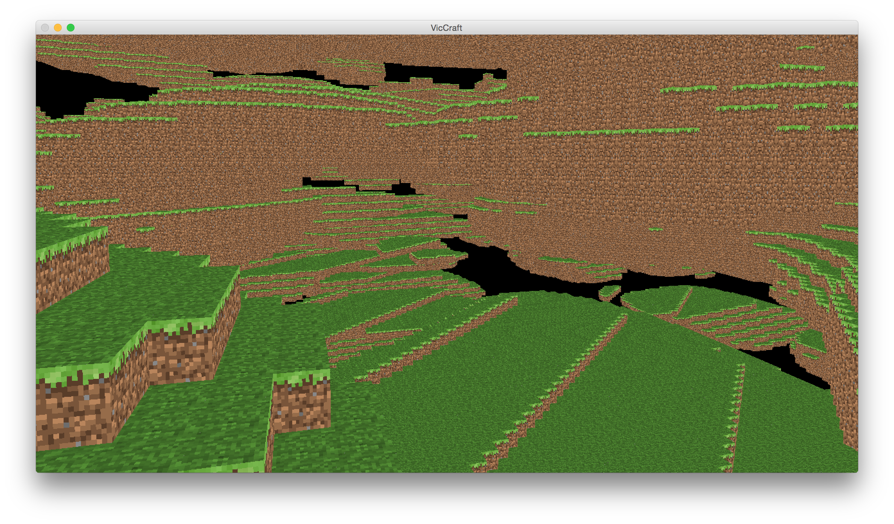
ray tracing
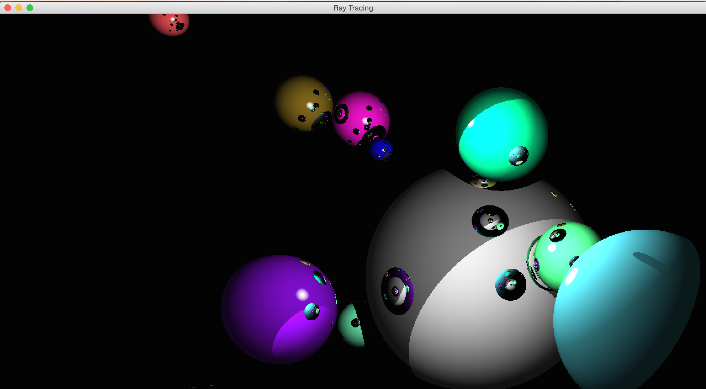
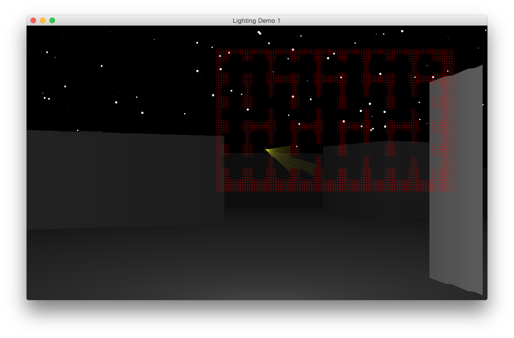
projection matricies
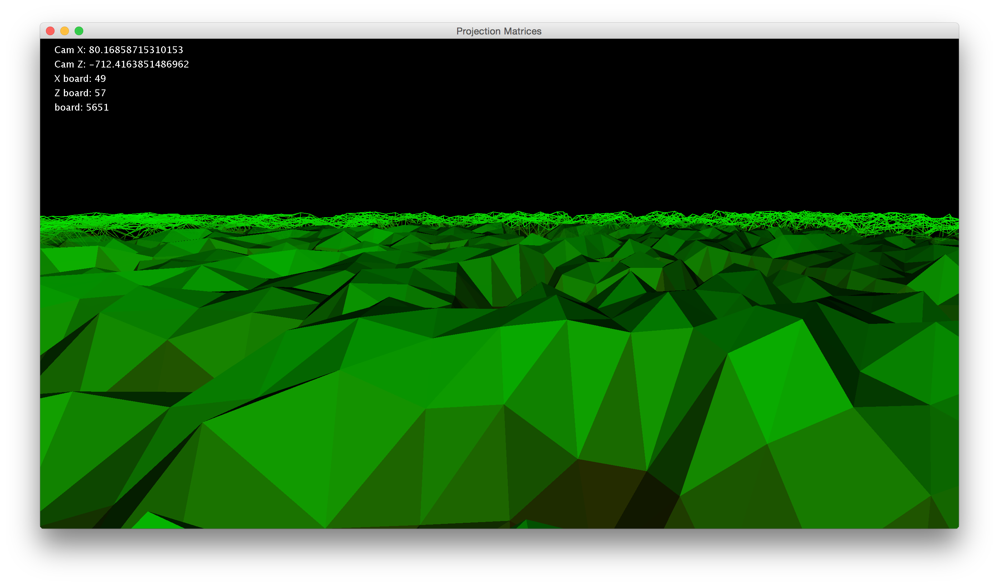
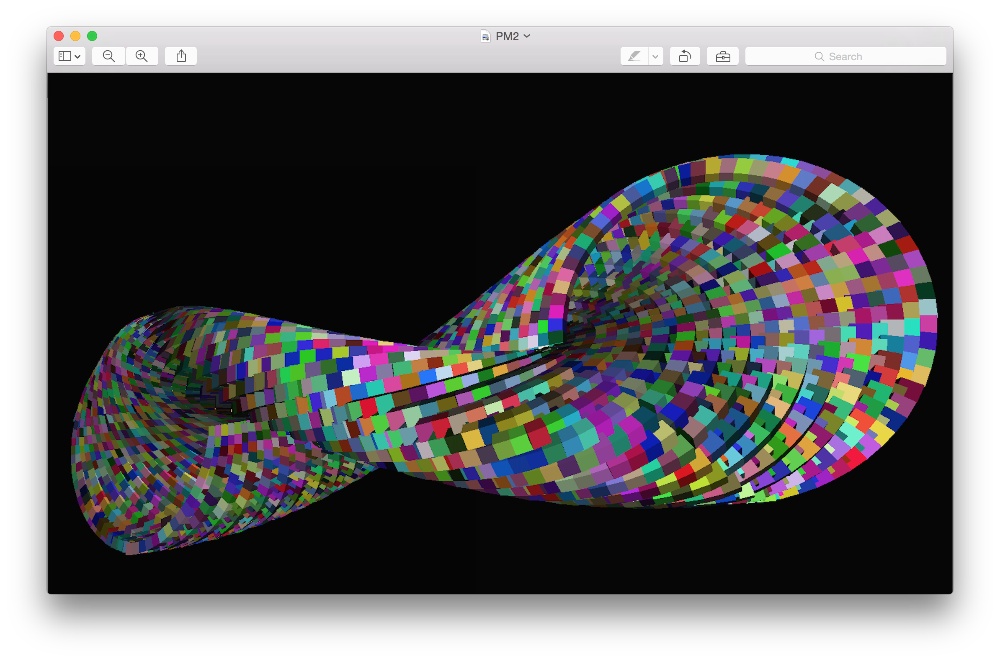
minecraft
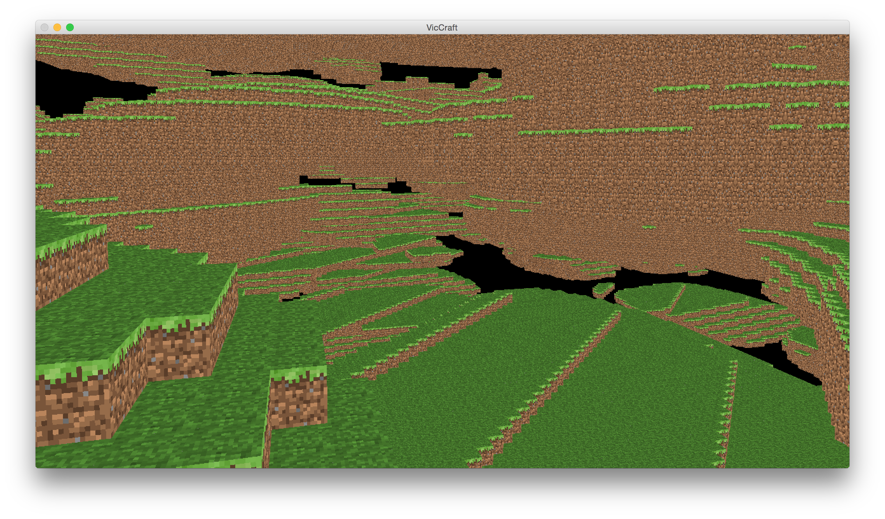